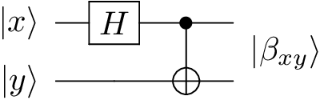
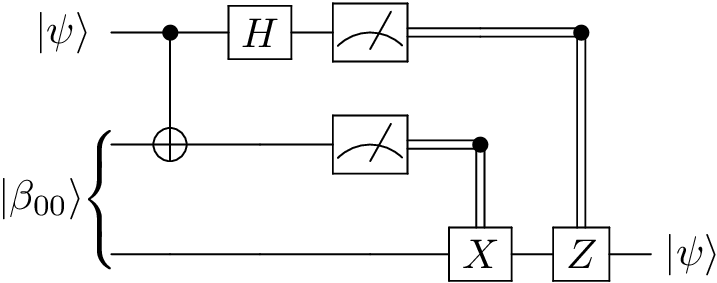
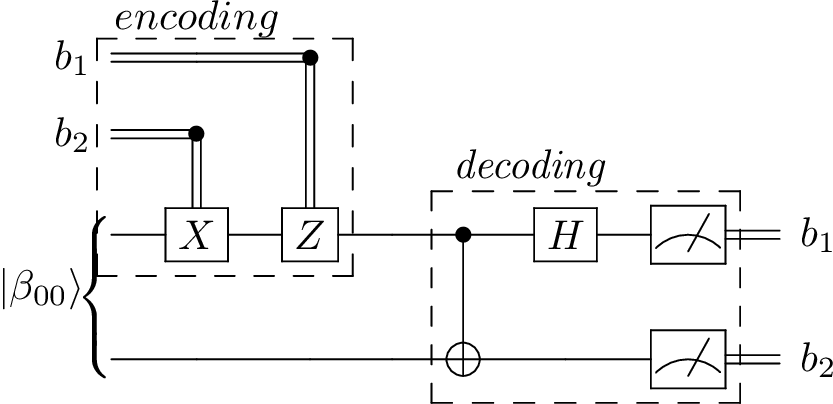

Examples¶
This page demonstrates how QCircuits can be used to simulate example quantum algorithms.
Producing Bell States¶
Example code producing each of the four entangled Bell states for a two-qubit system.
The circuit diagram is
{kind=link}
where |x⟩ and |y⟩ are each one of the computational basis states, |0⟩ or |1⟩.
E.g., \(|\beta_{00}⟩ = \frac{1}{\sqrt{2}} (|00⟩ + |11⟩)\).
Code:
import qcircuits as qc
from itertools import product
# Creates each of the four Bell states
def bell_state(x, y):
H = qc.Hadamard()
CNOT = qc.CNOT()
phi = qc.bitstring(x, y)
phi = H(phi, qubit_indices=[0])
return CNOT(phi)
if __name__ == '__main__':
for x, y in product([0, 1], repeat=2):
print('\nInput: {} {}'.format(x, y))
print('Bell state:')
print(bell_state(x, y))
Quantum Teleportation¶
{kind=link}
Code:
import qcircuits as qc
# Quantum Teleportation: transmitting two classical bits to transport a qubit state
# Alice has a qubit in a given quantum state.
# Alice and Bob have previously prepared a Bell state, and have since
# physically separated the qubits.
# Alice manipulates her hidden qubit and her half of the Bell state, and then
# measures both qubits.
# She sends the result (two classical bits) to Bob, who is able to reconstruct
# Alice's state by applying operators based on the measurement outcomes.
def quantum_teleportation(alice_state):
# Get operators we will need
CNOT = qc.CNOT()
H = qc.Hadamard()
X = qc.PauliX()
Z = qc.PauliZ()
# The prepared, shared Bell state
bell = qc.bell_state(0, 0)
# The whole state vector
state = alice_state * bell
# Apply CNOT and Hadamard gate
state = CNOT(state, qubit_indices=[0, 1])
state = H(state, qubit_indices=[0])
# Measure the first two bits
# The only uncollapsed part of the state vector is Bob's
M1, M2 = state.measure(qubit_indices=[0, 1], remove=True)
# Apply X and/or Z gates to third qubit depending on measurements
if M2:
state = X(state)
if M1:
state = Z(state)
return state
if __name__ == '__main__':
# Alice's original state to be teleported to Bob
alice = qc.qubit(theta=1.5, phi=0.5, global_phase=0.2)
# Bob's state after quantum teleportation
bob = quantum_teleportation(alice)
print('Original state:', alice)
print('\nTeleported state:', bob)
Quantum Parallelism¶

Code:
import qcircuits as qc
import numpy as np
# Example of quantum parallelism
# Construct a Boolean function
def construct_problem():
answers = np.random.randint(0, 2, size=2)
def f(bit):
return answers[bit]
return f
def quantum_parallelism(f):
U_f = qc.U_f(f, d=2)
H = qc.Hadamard()
phi = qc.zeros(2)
phi = H(phi, qubit_indices=[0])
phi = U_f(phi)
if __name__ == '__main__':
f = construct_problem()
quantum_parallelism(f)
Deutsch’s Algorithm¶

Code:
import qcircuits as qc
import numpy as np
# Deutsch's Algorithhm:
# We use interference to determine if f(0) = f(1) using a single function evaluation.
# Construct a Boolean function that is constant or balanced
def construct_problem():
answers = np.random.randint(0, 2, size=2)
def f(bit):
return answers[bit]
return f
def deutsch_algorithm(f):
U_f = qc.U_f(f, d=2)
H = qc.Hadamard()
phi = H(qc.zeros()) * H(qc.ones())
phi = U_f(phi)
phi = H(phi, qubit_indices=[0])
measurement = phi.measure(qubit_indices=0)
return measurement
if __name__ == '__main__':
f = construct_problem()
parity = f(0) == f(1)
measurement = deutsch_algorithm(f)
print('f(0): {}, f(1): {}'.format(f(0), f(1)))
print('f(0) == f(1): {}'.format(parity))
print('Measurement: {}'.format(measurement))
The Deutsch-Jozsa Algorithm¶

Code:
import qcircuits as qc
import numpy as np
import random
# Deutsch-Jozsa Algorithhm:
# We are presented with a Boolean function that is either constant or
# balanced (i.e., 0 for half of inputs, 1 for the other half).
# We make use of interference to determine whether the function is constant
# or balanced in a single function evaluation.
# Construct a Boolean function that is constant or balanced
def construct_problem(d=1, problem_type='constant'):
num_inputs = 2**d
answers = np.zeros(num_inputs, dtype=np.int32)
if problem_type == 'constant':
answers[:] = int(np.random.random() < 0.5)
else: # function is balanced
indices = np.random.choice(num_inputs, size=num_inputs//2, replace=False)
answers[indices] = 1
def f(*bits):
index = sum(v * 2**i for i, v in enumerate(bits))
return answers[index]
return f
def deutsch_jozsa_algorithm(d, f):
# The operators we will need
U_f = qc.U_f(f, d=d+1)
H_d = qc.Hadamard(d)
H = qc.Hadamard()
state = qc.zeros(d) * qc.ones(1)
state = (H_d * H)(state)
state = U_f(state)
state = H_d(state, qubit_indices=range(d))
measurements = state.measure(qubit_indices=range(d))
return measurements
if __name__ == '__main__':
d = 10
problem_type = random.choice(['constant', 'balanced'])
f = construct_problem(d, problem_type)
measurements = deutsch_jozsa_algorithm(d, f)
print('Problem type: {}'.format(problem_type))
print('Measurement: {}'.format(measurements))
print('Observed all zeros: {}'.format(not any(measurements)))
Superdense Coding¶
{kind=link}
Code:
import qcircuits as qc
import numpy as np
# Superdense Coding: transmitting a qubit to transport two classical bits
# Alice and Bob have previously prepared a Bell state, and have since
# physically separated the qubits.
# Alice has two classical bits she wants to transmit to Bob.
# She manipulates her half of the Bell state depending on the values of those bits,
# then transmits her qubit to Bob, who then measures the system.
def superdense_coding(bit_1, bit_2):
# Get operators we will need
CNOT = qc.CNOT()
H = qc.Hadamard()
X = qc.PauliX()
Z = qc.PauliZ()
# The prepared, shared Bell state
# Initially, half is in Alice's possession, and half in Bob's
phi = qc.bell_state(0, 0)
# Alice manipulates her qubit
if bit_2:
phi = X(phi, qubit_indices=[0])
if bit_1:
phi = Z(phi, qubit_indices=[0])
# Bob decodes the two bits
phi = CNOT(phi)
phi = H(phi, qubit_indices=[0])
measurements = phi.measure()
return measurements
if __name__ == '__main__':
# Alice's classical bits she wants to transmit
bit_1, bit_2 = np.random.randint(0, 2, size=2)
# Bob's measurements
measurements = superdense_coding(bit_1, bit_2)
print("Alice's initial bits:\t{}, {}".format(bit_1, bit_2))
print("Bob's measurements:\t{}, {}".format(measurements[0], measurements[1]))
Phase Estimation¶
We are give a black-box d-qubit operator U and one of its eigenstates. The task is to estimate the phase of the corresponding eigenvalue, storing the result in a t-qubit register.
Code:
import qcircuits as qc
import numpy as np
from scipy.stats import unitary_group
# Phase estimation
# We are given a black-box unitary operator, and one of its eigenstates.
# The task is to estimate the phase of the corresponding eigenvalue.
# This is done making use of the efficient inverse quantum Fourier transform.
# Prepares a state that when the inverse Fourier transform is applied,
# unpacks the binary fractional expansion of the phase into the
# first t-qubit register.
def stage_1(state, U, t, d):
state = qc.Hadamard(d=t)(state, qubit_indices=range(t))
# For each qubit in reverse order, apply the Hadamard gate,
# then apply U^(2^i) to the d-qubit register
# conditional on the state of the t-i qubit in the
# t-qubit register.
for idx, t_i in enumerate(range(t-1, -1, -1)):
U_2_idx = U
for app_i in range(idx):
U_2_idx = U_2_idx(U_2_idx)
C_U = qc.ControlledU(U_2_idx)
state = C_U(
state,
qubit_indices=[t_i] + list(range(t, t+d, 1))
)
return state
# The t-qubit quantum Fourier transform
def QFT(t):
Op = qc.Identity(t)
H = qc.Hadamard()
# The R_k gate applies a 2pi/2^k phase is the qubit is set
C_Rs = {}
for k in range(2, t+1, 1):
R_k = np.exp(np.pi * 1j / 2**k) * qc.RotationZ(2*np.pi / 2**k)
C_Rs[k] = qc.ControlledU(R_k)
# For each qubit in order, apply the Hadamard gate, and then
# apply the R_2, R_3, ... conditional on the remainder of the qubits
for t_i in range(t):
Op = H(Op, qubit_indices=[t_i])
for k in range(2, t+1 - t_i, 1):
Op = C_Rs[k](Op, qubit_indices=[t_i + k - 1, t_i])
# We have the QFT, but with the qubits in reverse order
# Swap them back
Swap = qc.Swap()
for i, j in zip(range(t), range(t-1, -1, -1)):
if i >= j:
break
Op = Swap(Op, qubit_indices=[i, j])
return Op
# The t-qubit inverse quantum Fourier transform
def inv_QFT(t):
return QFT(t).adj
# Do phase estimation for a random d-qubit operator,
# recording the result in a t-qubit register.
def phase_estimation(d=2, t=8):
# a d-qubit gate
U = unitary_group.rvs(2**d)
eigvals, eigvecs = np.linalg.eig(U)
U = qc.Operator.from_matrix(U)
# an eigenvector u and the phase of its eigenvalue, phi
phi = np.real(np.log(eigvals[0]) / (2j*np.pi))
if phi < 0:
phi += 1
u = eigvecs[:, 0]
u = qc.State.from_column_vector(u)
# add the t-qubit register
state = qc.zeros(t) * u
state = stage_1(state, U, t, d)
state = inv_QFT(t)(state, qubit_indices=range(t))
measurement = state.measure(qubit_indices=range(t))
phi_estimate = sum(measurement[i] * 2**(-i-1) for i in range(t))
return phi, phi_estimate
if __name__ == '__main__':
phi, phi_estimate = phase_estimation(d=2, t=8)
print('True phase: {}'.format(phi))
print('Estimated phase: {}'.format(phi_estimate))
Grover’s Algorithm¶
We are given a black-box boolean function f(x) that evaluates to 1 for exactly one value of x. Grover’s algorithm finds the solution with resources proportional to the square root of the size of the search space.
Code:
import qcircuits as qc
import numpy as np
import random
# Grover's algorithm (search)
# Given a boolean function f, Grover's algorithm finds an x such that
# f(x) = 1.
# If there are N values of x, and M possible solutions, it requires
# O(sqrt(N/M)) time.
# Here, we construct a search problem with 1 solution amongst 1024
# possible answers, and find the solution with 25 applications of
# the Grover iteration operator.
# Construct a Boolean function that is 1 in exactly one place
def construct_problem(d=10):
num_inputs = 2**d
answers = np.zeros(num_inputs, dtype=np.int32)
answers[np.random.randint(0, num_inputs)] = 1
def f(*bits):
index = sum(v * 2**i for i, v in enumerate(bits))
return answers[index]
return f
def grover_algorithm(d, f):
# The operators we will need
Oracle = qc.U_f(f, d=d+1)
H_d = qc.Hadamard(d)
H = qc.Hadamard()
N = 2**d
zero_projector = np.zeros((N, N))
zero_projector[0, 0] = 1
Inversion = H_d((2 * qc.Operator.from_matrix(zero_projector) - qc.Identity(d))(H_d))
Grover = Inversion(Oracle, qubit_indices=range(d))
# Initial state
state = qc.zeros(d) * qc.ones(1)
state = (H_d * H)(state)
# Number of Grover iterations
angle_to_rotate = np.arccos(np.sqrt(1 / N))
rotation_angle = 2 * np.arcsin(np.sqrt(1 / N))
iterations = int(round(angle_to_rotate / rotation_angle))
for i in range(iterations):
state = Grover(state)
measurements = state.measure(qubit_indices=range(d))
return measurements
if __name__ == '__main__':
d = 10
f = construct_problem(d)
bits = grover_algorithm(d, f)
print('Measurement: {}'.format(bits))
print('Evaluate f at measurement: {}'.format(f(*bits)))